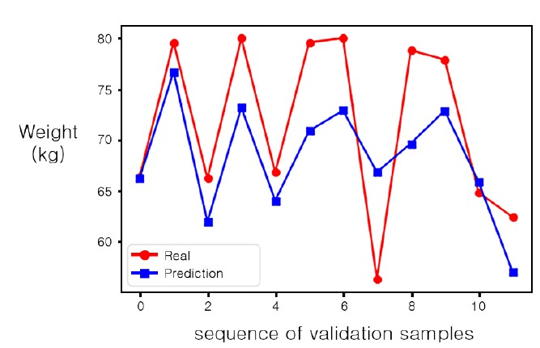

Mobile computing LAB에서 진행한 개인 프로젝트로 스마트 베드에 누운 사람의 체중을 예측하는 논문입니다. SCI급 저널인 Sensors에 Prediction of Body Weight of a Person Lying on a Smart Mat in Nonrestraint and Unconsciousness Conditions라는 제목으로 등재되었습니다.
이 프로젝트에 적용된 기술은 아래와 같습니다.
이전에 구축한 스마트 베드를 활용한 프로젝트로 스마트 베드 시스템에 딥러닝 기술을 적용하여 체중 예측 기능을 추가한 프로젝트입니다.
// Keras를 통한 레이어 구성
def build_network(input_features=None):
inputs = Input(shape=(input_features,), name="input")
x = Dense(2048, activation='relu', name="hidden1")(inputs)
prediction = Dense(1, activation='linear', name="final") (x)
model = Model(inputs=inputs, outputs=prediction)
opt = optimizers.Adam(lr=0.005, beta_1=0.9, beta_2=0.999, epsilon=None, decay=0.0, amsgrad=False)
model.compile(optimizer=opt, loss='mean_absolute_error')
return model이렇게 단층으로 모델을 구성하여 구현하였습니다. 실험 결과 MAE는 4.608, RMSE는 5.796을 나타내었습니다.
비전 기반의 체중 예측 연구의 경우 어두운 환경에서 측정이 어렵다는 환경적 한계가 존재하지만 본 연구는 128개의 압력센서를 활용한 체중 예측으로 환경적 한계로 부터 자유롭다는 차이가 있습니다.